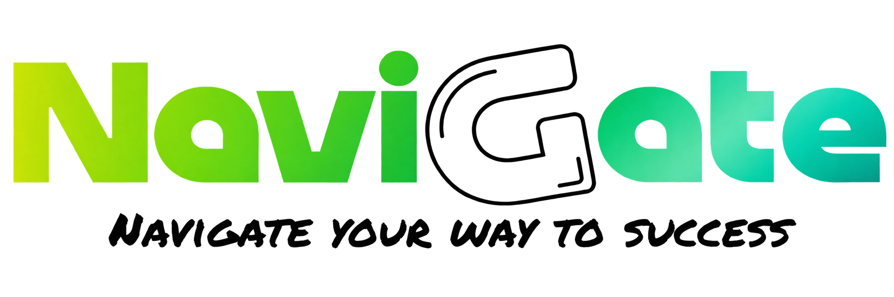

ברגעים נבחרים נעצור להסבר קצר. אפשר תמיד להמשיך בסרטון.
לא ניתן לטעון את הסרטון. אפשר לפתוח את סרטוני ההדרכה.
0:00 / 1:36
סרטון ההדרכה יתווסף בקרוב
לא ניתן לטעון את סרטון ההדרכה.


לא ניתן לטעון את הסרטון. אפשר לפתוח את סרטוני ההדרכה.
סרטון ההדרכה יתווסף בקרוב
לא ניתן לטעון את סרטון ההדרכה.